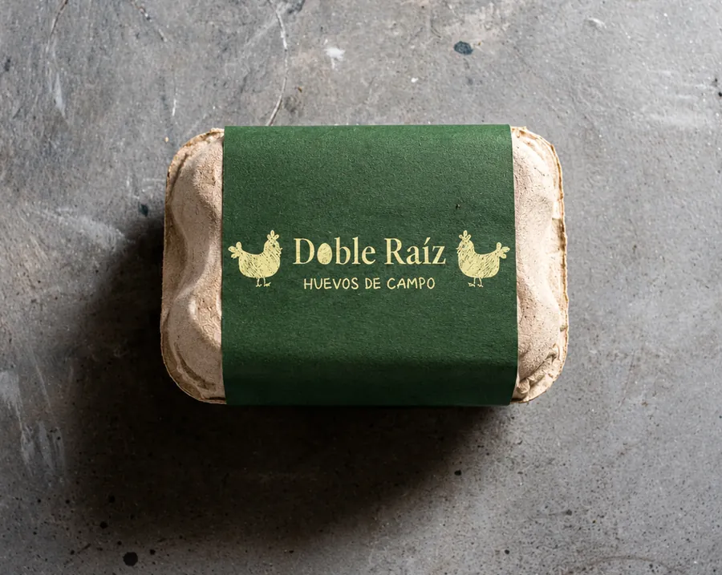
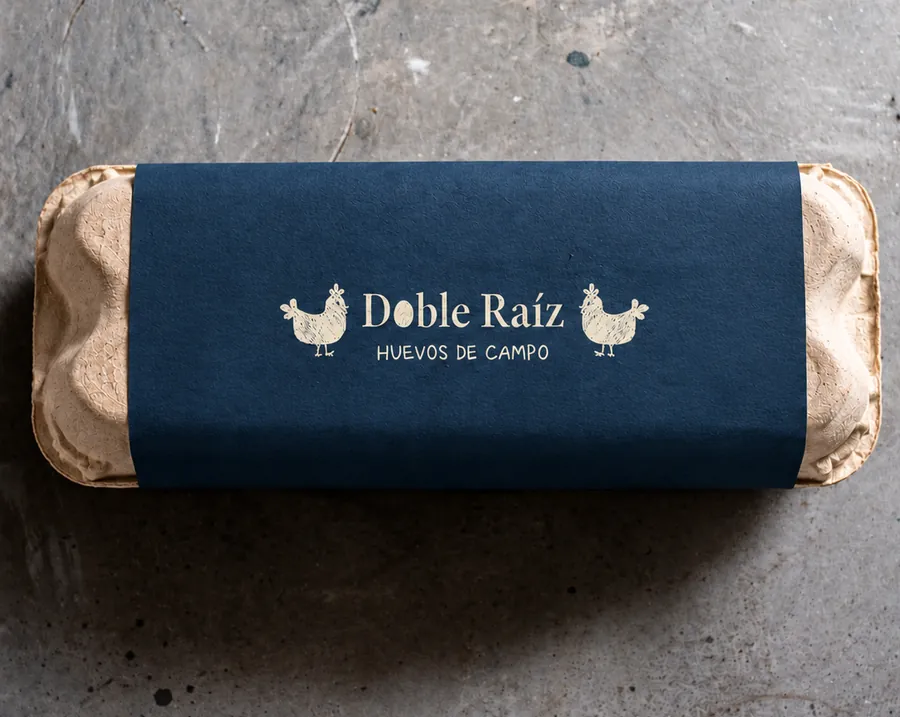
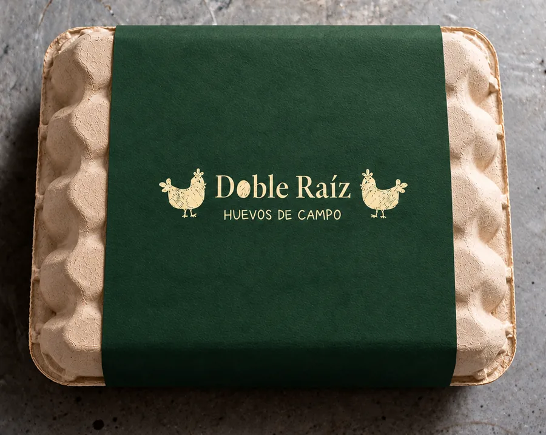

HUEVOS DE CAMPO
Conocé el origen
de cada huevo
Somos Doble Raíz. Una historia compartida, una mirada consciente y mucho por contarte sobre lo que elegís llevar a tu mesa.
EL ORIGEN A LA VISTA
NUESTRO ORIGEN
Todo empieza acá.Dos hermanos.
Una misma
manera de mirar.
Doble Raíz nace de una idea compartida entre dos hermanos: acercarte a lo que hay detrás de cada huevo.
Conocer su procedencia. Entender cómo se produce. Darle lugar al bienestar de las gallinas y al respeto por su entorno.
Bienestar, calidad y conciencia son los valores que guían nuestra propuesta.
Conocé nuestra mirada
 Ellas son el comienzo.
Ellas son el comienzo.LAS GALLINAS
El bienestar
ocupa el
primer lugar.
Nuestra manera de pensar el producto empieza por las gallinas.
El bienestar y el respeto por sus ciclos y su entorno forman parte de los principios de Doble Raíz.
¿Qué significa “libres de jaula”?
Describe un sistema de alojamiento sin jaulas. No implica, por sí solo, acceso al exterior. Las condiciones específicas de Doble Raíz están pendientes de validación para esta versión.
Un día
en el campo.
-
Reciben nutrientes
Cada mañana las gallinas acceden a alimento fresco: granos, hierbas y lo que encuentran en el campo.
-
Exploran el campo
Salen al exterior, picotean, se mueven y viven como gallinas. El espacio es parte de nuestra propuesta.
-
Alimento disponible
Durante todo el día tienen acceso libre a agua limpia, forraje y espacio para buscar su propio alimento.
-
Ponen con calma
El bienestar de cada gallina se refleja en sus huevos. Sin estrés, sin apuro, con un entorno que respetan.
-
Descansan de noche
Con luz natural, cada gallina respeta su ciclo de sueño real. Sin iluminación artificial que altere su ritmo.
-
Del campo a tu mesa
Recolección a mano, trazabilidad completa. Sabés exactamente de dónde viene lo que elegís comer.
NUESTROS HUEVOS · EL ORIGEN A LA VISTA
Del entorno
a tu mesa.

Huevos de campo, una historia compartida y una invitación a conocer su origen.
Elegí tu maple.
-

Maple de 6 huevos
Precio de referencia: $6.000
-

Maple de 12 huevos
Precio de referencia: $8.000
-

Maple de 30 huevos
Precio de referencia: $10.000
CERCA DE TU MESA
¿Dónde nos
encontramos?
Seguinos en Instagram para saber dónde conseguirnos.
@dobleraiz_ en Instagram (se abre en una pestaña nueva)PARA COMERCIOS Y DISTRIBUIDORES
Hagamos crecer
esta historia.
¿Querés acercar Doble Raíz a tus clientes? Conversemos sobre tu comercio y dónde estás.
Quiero vender Doble RaízPARA CONOCERNOS MEJOR
Buenas
preguntas.
¿Puedo comprar desde esta página?
Desde la página no se hacen compras, pero podés pedir tus huevos por WhatsApp. Escribinos y coordinamos el pedido y la entrega.
¿Libre de jaula significa al aire libre?
No necesariamente. “Libre de jaula” quiere decir que las gallinas no viven en jaulas. En Doble Raíz, además, salen al campo durante el día a picotear y moverse a su ritmo.
¿Qué presentaciones tienen?
Tenemos maples de 6, 12 y 30 huevos, para que elijas el que mejor se adapta a tu casa.
¿Cómo puedo comercializar Doble Raíz?
Si tenés un almacén, verdulería, dietética o restaurante y querés sumar Doble Raíz, no dudes en consultarnos. Escribinos por WhatsApp contándonos dónde está tu comercio y te pasamos toda la información.